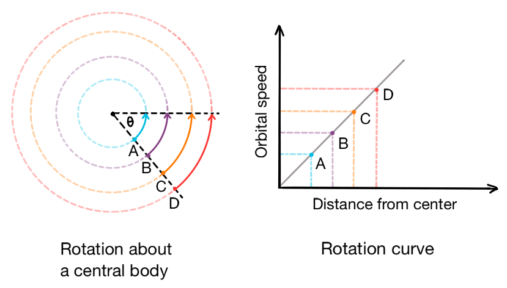
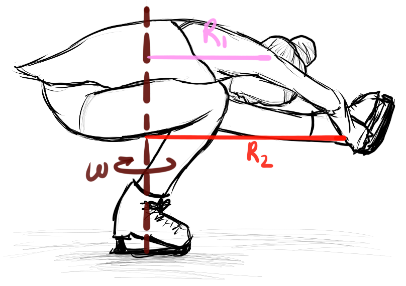

Angular Velocity¶
There are two ways to think about angular velocity.
Case 1¶
Body 1 is orbiting body 2, just like Earth travels on a curved path about the sun’s rotational axis.

Caption. On the left, imagine having a bird’s eye view of the plane that body 1 is orbiting body 2 (black dot at center) in. If body 1 were to conserve its angular velocity, body 1’s orbital speed would quicken as its orbital distance from the center increased (from A to D). Credit: G. O. Hollyday.
The velocity with which Earth orbits the sun is Earth’s angular velocity. The speed of Earth’s trajectory around the sun would be faster if Earth were closer to the sun and maintained its angular velocity. The farther body 1 is from body 2, the faster body 1’s linear velocity will be to complete an orbit in the same amount of time (in order to maintain its angular velocity)(see image above).
Case 2¶
A component of a body rotates within and as part of a single body (this is called solid body rotation). Every component of a single body is rotating about an axis of rotation.

Caption. As the figure skater’s body rotates with the same angular velocity \(\omega\), body parts farther from the figure skater’s axis of rotation, or those with greater radius R, will have a higher orbital speed. In this pose, the figure skater’s shoulder has a slower orbital speed than her foot, although both body parts are traveling at the same angular velocity. Credit: G. O. Hollyday.
For example, a figure skater spins with a certain angular velocity. Since each part of their body is connected [think of your body as a connected collection of very small volumes (e.g. cells, body parts)], every component rotates together at the same angular velocity. Each component has the same angular velocity, but may be moving at a different speed than other components in order to remain part of the body.
Start by considering a spinning figure skater with her leg extended (see image above). The foot (red R\(_2\)) has a larger radius and has to travel a longer arc about the body to line up with the shoulder (pink R\(_1\)), which is closer to the rotational axis (maroon \(\omega\)) and does not have to travel as large of a distance about the body. In the same amount of time (over the same angle change), these body parts must travel different speeds to maintain the body’s rate of rotation (angular velocity). A component must move faster if it is located at larger radii from the rotational axis, so the foot would have a faster linear velocity than the shoulder would.
The figure skater in the image above spins with the same angular velocity even though her outstretched limbs may travel at faster linear velocities than her torso.
The relationship between angular velocity \(\omega\) and linear velocity v is
where r is the distance from the body to the rotational axis (the axis about which the body is rotating with angular velocity \(\omega\)). The component of the body’s linear velocity that affects the magnitude (value) of angular velocity is perpendicular to the radius vector and perpendicular to the rotational axis.
A solid, rotating body can have the same angular velocity, yet portions of the body at different radii will have different linear velocities. If we are only looking at the angular velocity in z, so that our rotational axis is z, then the perpendicular radii would make up different sized orbits in the xy plane (at various z). You can also think of the distances from the rotational axis as nested cylinders. The outer orbits/cylinders would be at larger radii, so to maintain the body’s rotational velocity, that portion of the body would need a linear velocity (tangential to the orbit/cylinder made in the xy plane, or rather, perpendicular to the radius) that is faster than the portions of the body at smaller orbits/cylinders (radii).
What if there was a rotating planetary body that could not rotate together at the same angular velocity? This is true for a synestia. We define a synestia by describing it in terms of solid body rotation (Case 2). The inner planet-like region of a synestia corotates at the same angular velocity, but the outer disk-like region rotates with slower angular velocities.